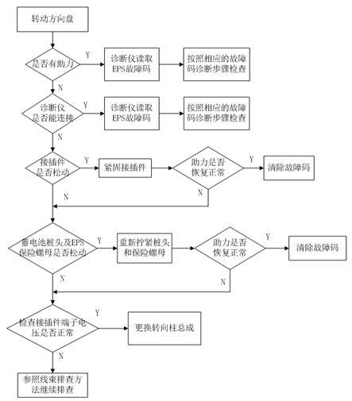
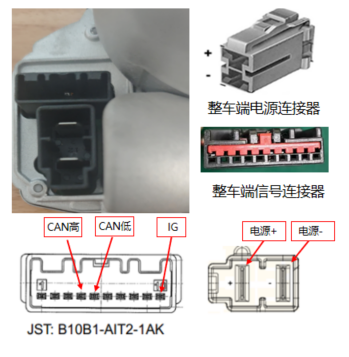

转向无助力排查思路如下

方向无助力，首先看EPS故障灯是否点亮，如点亮故障灯，则用诊断仪读EPS故障码，按照相应的故障码诊断步骤排查；
如EPS故障灯没有点亮，则用万用表检查EPS电压电压和IG（点火信号）电压是否为在标准工作电压范围（12V~16V），接插件示意图和接口定义如下所示：

| 针脚编号 | 针脚定义 | 信号类型 | 信号范围 | 测试条件 | 备注 |
| + | 电压正极 | BAT电 | 12~16V | 对车身搭铁； | |
| - | 电源负极 | 功率地 | 0V | ||
| 4 | CANH | 信号高 | |||
| 5 | CANL | 信号低 | |||
| 10 | IG信号 | IGN电(点火信号电) | 12~16V | 点火开关on，对车身搭铁 |